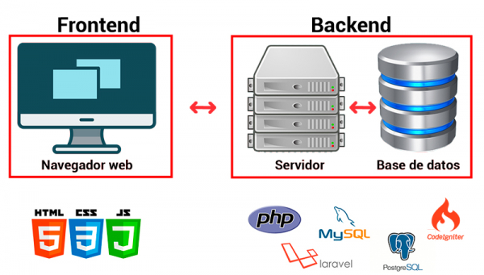

Frontend
El Front end es la parte de una web que conecta e interactúa con los usuarios que la visitan. Es la parte visible, la que muestra el diseño, los contenidos y la que permite a los visitantes navegar por las diferentes páginas mientras lo deseen. Es una de las dos mitades en las que se divide la estructura de cualquier página web.
Fundamentos de Frontend
Ingresar al mundo de la programación web puede ser difícil para las personas nuevas. Tantos conceptos suenan extraños y se vuelven problemáticos en la etapa de escritura. ¿Cómo escribir: desarrollador de software o desarrollador front-end? ¿Quizás un desarrollador front-end, o más bien un ingeniero de software front-end? Sin embargo, la más común es la entrada con guión. Desarrollador front-end: la persona responsable de la parte visual de la aplicación (lo que vemos, nosotros = usuarios del sitio).
Por lo general, el desarrollador front-end trabaja con un diseñador gráfico (diseñador web) que proporciona el diseño gráfico. A menudo, los desarrolladores front-end tienen la oportunidad de trabajar con un diseñador de UX que propone y crea un prototipo de interacciones que tendrán lugar en los sitios web. El papel de los desarrolladores front-end es ponerlo todo junto. Se dice popularmente que un desarrollador front-end tiene la tarea de cortar un diseño gráfico, dividir el diseño en partes más pequeñas y codificar (HTML y CSS) en sitios web que los usuarios finalmente usan.
Licenciatura en Sistemas Computacionales
© Copyright 2023. ARLETH GUADALUPE CASTRO MARTINEZ